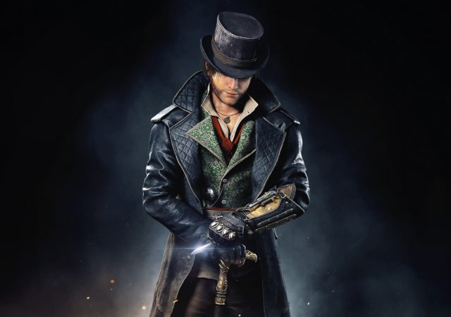
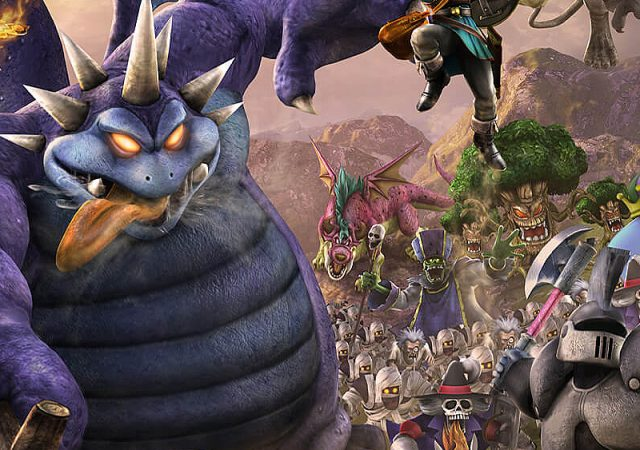

Following Kojima Productions’ open-world stealth game at No.2 is Super Mario Maker, the only other new game to make the top ten. Mad Max finishes its second week on the chart at No.3, followed by Disney Infinity 3.0.
Sony’s narrative-driven horror title, Until Dawn, moves down one spot to No.5, while Xbox One title Gears of War: Ultimate Edition drops three places to No.6.
Tearaway Unfolded , Media Molecule’s PS4 remake of its BAFTA-winning PS Vita platformer, has debuted at 33.
Elsewhere, Grand Theft Auto V marks its 100th week on the chart at No.7, while Lego Jurassic World, Minecraft: Xbox Edition, and Minecraft: PlayStation Edition round off the top ten.
The full top-ten chart for the week ending September 12, compiled by sales monitor Chart-Track, can be found below. This chart does not include digital sales data, and thus should not be considered fully representative of all UK game sales.
Lucien Favre, a tactician of the highest quality, revived the Foals and reintroduced the club to a winning mentality by virtue of well-planned tactics and the remarkable execution of footballing ideals. In four years, they went from battling relegation to qualifying for the Champions League under the vibrant Swiss tactician, who masterminded their return to successful ways by playing a delectable game that revolved around swift transitional play.
And then the moonlight flooded the cave, and there before me lay my own body as it had been lying all these hours, with the eyes staring toward the open ledge and the hands resting limply upon the ground. I looked first at my lifeless clay there upon the floor of the cave and then down at myself in utter bewilderment; for there I lay clothed, and yet here I stood but naked as at the minute of my birth.
The transition had been so sudden and so unexpected that it left me for a moment forgetful of aught else than my strange metamorphosis. My first thought was, is this then death! Have I indeed passed over forever into that other life! But I could not well believe this, as I could feel my heart pounding against my ribs from the exertion of my efforts to release myself from the anaesthesis which had held me. My breath was coming in quick, short gasps, cold sweat stood out from every pore of my body, and the ancient experiment of pinching revealed the fact that I was anything other than a wraith.
Again was I suddenly recalled to my immediate surroundings by a repetition of the weird moan from the depths of the cave. Naked and unarmed as I was, I had no desire to face the unseen thing which menaced me.
My revolvers were strapped to my lifeless body which, for some unfathomable reason, I could not bring myself to touch. My carbine was in its boot, strapped to my saddle, and as my horse had wandered off I was left without means of defense.
The crisp, fresh mountain air outside the cave acted as an immediate tonic and I felt new life and new courage coursing through me. Pausing upon the brink of the ledge I upbraided myself for what now seemed to me wholly unwarranted apprehension. I reasoned with myself that I had lain helpless for many hours within the cave, yet nothing had molested me, and my better judgment, when permitted the direction of clear and logical reasoning, convinced me that the noises I had heard must have resulted from purely natural and harmless causes; probably the conformation of the cave was such that a slight breeze had caused the sounds I heard.
I decided to investigate, but first I lifted my head to fill my lungs with the pure, invigorating night air of the mountains. As I did so I saw stretching far below me the beautiful vista of rocky gorge, and level, cacti-studded flat, wrought by the moonlight into a miracle of soft splendor and wondrous enchantment.
Few western wonders are more inspiring than the beauties of an Arizona moonlit landscape; the silvered mountains in the distance, the strange lights and shadows upon hog back and arroyo, and the grotesque details of the stiff, yet beautiful cacti form a picture at once enchanting and inspiring; as though one were catching for the first time a glimpse of some dead and forgotten world, so different is it from the aspect of any other spot upon our earth.
Unable longer to resist the temptation to escape this horrible place I leaped quickly through the opening into the starlight of a clear Arizona night. The crisp, fresh mountain air outside the cave acted as an immediate tonic and I felt new life and new courage coursing through me. Pausing upon the brink of the ledge I upbraided myself for what now seemed to me wholly unwarranted apprehension.
I reasoned with myself that I had lain helpless for many hours within the cave, yet nothing had molested me, and my better judgment, when permitted the direction of clear and logical reasoning, convinced me that the noises I had heard must have resulted from purely natural and harmless causes; probably the conformation of the cave was such that a slight breeze had caused the sounds I heard.
I decided to investigate, but first I lifted my head to fill my lungs with the pure, invigorating night air of the mountains. As I did so I saw stretching far below me the beautiful vista of rocky gorge, and level, cacti-studded flat, wrought by the moonlight into a miracle of soft splendor and wondrous enchantment.
Few western wonders are more inspiring than the beauties of an Arizona moonlit landscape; the silvered mountains in the distance, the strange lights and shadows upon hog back and arroyo, and the grotesque details of the stiff, yet beautiful cacti form a picture at once enchanting and inspiring; as though one were catching for the first time a glimpse of some dead and forgotten world, so different is it from the aspect of any other spot upon our earth.
As I stood thus meditating, I turned my gaze from the landscape to the heavens where the myriad stars formed a gorgeous and fitting canopy for the wonders of the earthly scene. My attention was quickly riveted by a large red star close to the distant horizon. As I gazed upon it I felt a spell of overpowering fascination—it was Mars, the god of war, and for me, the fighting man, it had always held the power of irresistible enchantment. As I gazed at it on that far-gone night it seemed to call across the unthinkable void, to lure me to it, to draw me as the lodestone attracts a particle of iron.
Destiny: The Taken King Review
ANT EKSILER - OCTOBER 25, 2015
Assassin’s Creed Syndicate Review
ANT EKSILER - OCTOBER 25, 2015
Dragon Quest Heroes: The World Tree’s Woe and the Blight Below
ANT EKSILER - OCTOBER 25, 2015
Ant Eksiler
Gregg the butcher and his little boy, and two or three loafers and golf caddies who were accustomed to hang about the railway station.